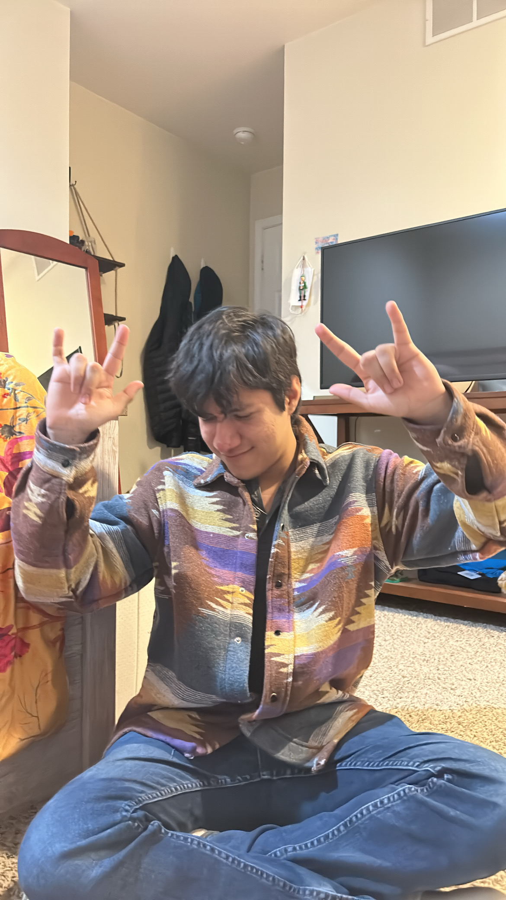

Forestr is a website for tracking and modeling deforestation in Alaska. The site can be used as a tool to educate and inform the public about the devastating effects of deforestation and how it impacts those who call Alaska home. The site also highlights some of the other major contributing factors of biodiversity loss (e.g. road construction, bycatch, etc.) The site displays deforestation patterns over time and also features an interactive food chain which offers information based on the animal affected.
We decided to focus on the loss of biodiversity in Alaska because the state contains numerous diverse habitats, making it home to many animals – including over 1,100 species of vertebrates, 48 species of fish, and countless invertebrates. Unfortunately, these species are all threatened by biodiversity loss, which even brings some to the brink of extinction. In Alaska, biodiversity loss is primarily caused by deforestation, but it is also compounded by road construction, oil drilling, logging, bycatching, and ice melting.